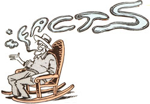
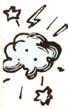
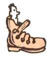
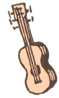
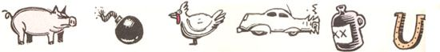

Well sir, you did it! So many of you wrote in to ask what had happened to Last Laugh that MOTHER's editor finally gave in, drove out to Plumtree Crossing, and asked me to come out of retirement!
Now, next issue I'll tell you just what secret doin's the boys at the Crossing have been up to these past several months, but this time around, I'm going to celebrate my return by sharing some of the best chuckles from the columns in MOM's first 100 issues. As you know, for over half of those 100 issues, the old reprobates who hang around the Plumtree Crossing General Store have been distorting facts with the best of 'em. Why, they can't ever refer to each other without dropping such pearls of prevarication as:
"Clovis Roebucks is so dumb he couldn't find the nose on his face if he was looking in a mirror."
"Ott's such a born liar that he has to get somebody else to call his hogs."
"Ol' Newt Blanchard? He was born tired and raised lazy."
"Miss Sody was so short she had to reach up to tie her shoes."
"Ott was so ugly his mother had to borrow a baby to take to church."
"Skeeter's mouth needed more reconstruction than the South after Appomattox."
"Lafe lived so far back in the hills his old battery-powered radio didn't pick up 'The Grand Ole Opry' until Tuesday."
Then there's the lengths they've gone to when indulging in that time-honored country pastime - talking about the weather:
"The night was so dark a raindrop knocked on my car window and asked for a light so it could see to hit the ground."
"It was so cold you couldn't step outside without dressin' up like a three-year stack of feed sacks. In fact, we had to huddle so close around the stove to stay warm that Lem Tucker swore he was lookin' at the world through Doc Thromberg's glasses!"
"A visitor once asked, 'Don't it ever rain around here?' I replied, 'Do you recall the story of Noah and the ark and how it rained 40 days and 40 nights?' He said, 'Yes.' And I said, 'Well, we got a half inch that time.' "
Course, full-blown storytelling is where the boys' truth-stretching talents really shone . . . particularly when those stories involved finding entertainment in calamities. I just happen to recall the following examples:
One time I was blasting stumps down there along the river bottom and that old sow of mine come along and gobbled down the dynamite. She was the toughest Poland China I ever saw, and darn, if she wouldn't eat anything. Sure enough, I'd just come back from setting a charge when, there she was, chomping up the last of what had been blamed near a full box of 20% sticks.
Afore I thought what I was loin', I yelled at that old sow and she took off for the barn. I didn't know what else to do, so I hightailed it right after her. Just as she rounded the back side of the barn, she met the hired hand I had at the time - a squinty-eyed fellow by the name of McIntyre - coming the other way. And afore I could say a word, old McIntyre hauled off and kicked that Poland China square in the ribs.
Well, there was just a tremendous explosion. Blew the barn down, flattened the chicken house, knocked over the windmill, took the roof right off my house, killed the hired man of course, and flipped the tractor upside down.
Yes sir. And I mean to tell you . . . for about three weeks there, I also had one mighty sick hog on my hands.
One time an out-of-town dude was tooling through Lick Skillet in an expensive limousine when old Clarence Smithers come shooting out of a side street in that beat-up pickup of his and crammed the stranger broadside.
"Why you this, that, and those," screamed the stranger in stronger words than I care to reiterate, "just look at what you've done!"
Clarence pulled out a jug of his best corn liquor and said, "Calm down. The accident's over and there ain't a blessed thing we can do about it now. But we're both growed men, so let's discuss this whole affair peaceable. Here. Have a drink. It'll settle your nerves."
So the stranger took a long pull on the jug and handed it back to Clarence . . . who capped it and set the gallon container in the back seat of the out-of-towner's car.
"Wait a minute," said the other fellow. "Aren't you gonna have a drink too?"
"Naw," said Clarence. "I think I'll just wait until after the sheriff's been here before I have my drink."
All the other children in Clarence's family were as quick at getting out of a tight spot as he was. Once his little brother Emory went into Jake Honeycutt's blacksmith shop, walked right over to the forge, and picked up a hot horseshoe. Well, as you might expect, he laid it right back down again.
"Ha!" old Jake exclaimed. "Burned you, didn't it?"
"No," said Emory. "It just don't take me long to look at a horseshoe."
When it comes to real calamities, no one could call up misery the way of Glum Tucker did. Last time I visited him, I asked how his kinfolks were and he just started in a-crying. "Kinfolk? Kinfolk?" he moaned. "Why, two years ago, I had me a wife and at least eight or nine children. Then corn went down and taxes went up till, one by one, I had to send all the youngsters to the Orphans' Home. That was bad enough, but things kept on getting worse . . . and then I had to send my dear, sweet love, my only wife, on back to her daddy's."
"Cuss, Uncle," I replied, "I'm powerful sad to hear that."
"Well, let me tell you," he said, "things is going bad again. If they get much worse, blamed if I ain't afraid I'll have to sell my car!"
Yessir, those are just a few of the yarns we've shared in Last Laugh. True, most of them were old when New Orleans was a blueprint. But - what the heck - as Thomas Robert Dewar once remarked: "If Adam came on earth again, the only thing he would recognize would be the old jokes."
|
 Illustrations by Peter Kuper |
 |
|
|
 |
 |
 |